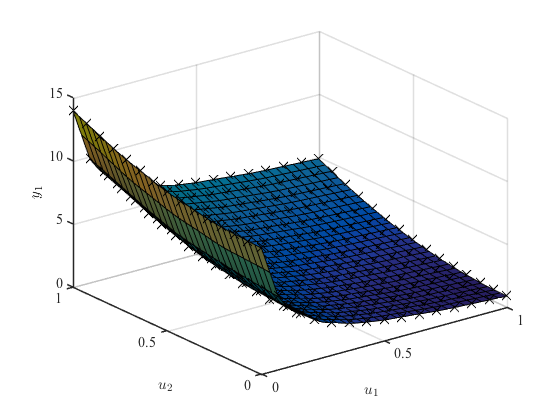

lolimotDemo2 Demo 2: Static process with 2 inputs and 1 output
LoLiMoT - Nonlinear System Identification Toolbox
Torsten Fischer, 20-October-2011
Institute of Mechanics & Automatic Control, University of Siegen, Germany
Copyright (c) 2012 by Prof. Dr.-Ing. Oliver Nelles
LMN = lolimot;
[u1g, u2g] = meshgrid(linspace(0,1,15), linspace(0,1,15));
u1 = u1g(:);
u2 = u2g(:);
y = 1./(0.1+u1) + (2*u2).^2;
LMN.input = [u1 u2];
LMN.output = y;
LMN = LMN.train;
[u1G, u2G] = meshgrid(linspace(0,1,30), linspace(0,1,30));
u1G = u1G(:);
u2G = u2G(:);
yG = 1./(0.1+u1G) + (2*u2G).^2;
yGModel = calculateModelOutput(LMN, [u1G u2G], yG);
JG = calcGlobalLossFunction(LMN ,yG, yGModel);
figure
LMN.plotModel
figure
LMN.plotPartition
xInputDelay is empty, defaults are used: xInputDelay(1:p) = {0}
zInputDelay is empty, defaults are used: zInputDelay(1:p) = {0}
xOutputDelay is empty, defaults are used: xOutputDelay(1:p) = {[]}
zOutputDelay is empty, defaults are used: zOutputDelay(1:p) = {[]}
Initial net has 1 local linear model(s): J = 0.544439.
1. Iteration. Number of local linear models = 1. Checking for split of model 1 ...
Testing split in dimension 1 with ratio 0.50: J = 0.365469.
Testing split in dimension 2 with ratio 0.50: J = 0.530990.
-> Splitting in dimension 1 with ratio 0.50: J = 0.365469 and penalty = 0.375106.
2. Iteration. Number of local linear models = 2. Checking for split of model 2 ...
Testing split in dimension 1 with ratio 0.50: J = 0.215300.
Testing split in dimension 2 with ratio 0.50: J = 0.358587.
-> Splitting in dimension 1 with ratio 0.50: J = 0.215300 and penalty = 0.222791.
3. Iteration. Number of local linear models = 3. Checking for split of model 4 ...
Testing split in dimension 1 with ratio 0.50: J = 0.142034.
Testing split in dimension 2 with ratio 0.50: J = 0.208191.
-> Splitting in dimension 1 with ratio 0.50: J = 0.142034 and penalty = 0.148176.
4. Iteration. Number of local linear models = 4. Checking for split of model 3 ...
Testing split in dimension 1 with ratio 0.50: J = 0.140891.
Testing split in dimension 2 with ratio 0.50: J = 0.110022.
-> Splitting in dimension 2 with ratio 0.50: J = 0.110022 and penalty = 0.115513.
5. Iteration. Number of local linear models = 5. Checking for split of model 6 ...
Testing split in dimension 1 with ratio 0.50: J = 0.090782.
Testing split in dimension 2 with ratio 0.50: J = 0.100905.
-> Splitting in dimension 1 with ratio 0.50: J = 0.090782 and penalty = 0.095882.
6. Iteration. Number of local linear models = 6. Checking for split of model 5 ...
Testing split in dimension 1 with ratio 0.50: J = 0.090854.
Testing split in dimension 2 with ratio 0.50: J = 0.072288.
-> Splitting in dimension 2 with ratio 0.50: J = 0.072288 and penalty = 0.076692.
7. Iteration. Number of local linear models = 7. Checking for split of model 10 ...
Split in dimension 1 with ratio 0.50 is forbidden!
Testing split in dimension 2 with ratio 0.50: J = 0.062162.
-> Splitting in dimension 2 with ratio 0.50: J = 0.062162 and penalty = 0.066328.
8. Iteration. Number of local linear models = 8. Checking for split of model 7 ...
Testing split in dimension 1 with ratio 0.50: J = 0.062385.
Testing split in dimension 2 with ratio 0.50: J = 0.048693.
-> Splitting in dimension 2 with ratio 0.50: J = 0.048693 and penalty = 0.052205.
9. Iteration. Number of local linear models = 9. Checking for split of model 8 ...
Testing split in dimension 1 with ratio 0.50: J = 0.047136.
Testing split in dimension 2 with ratio 0.50: J = 0.046219.
-> Splitting in dimension 2 with ratio 0.50: J = 0.046219 and penalty = 0.049904.
10. Iteration. Number of local linear models = 10. Checking for split of model 9 ...
Testing split in dimension 1 with ratio 0.50: J = 0.044195.
Testing split in dimension 2 with ratio 0.50: J = 0.040753.
-> Splitting in dimension 2 with ratio 0.50: J = 0.040753 and penalty = 0.044339.
11. Iteration. Number of local linear models = 11. Checking for split of model 11 ...
Split in dimension 1 with ratio 0.50 is forbidden!
Testing split in dimension 2 with ratio 0.50: J = 0.033456.
-> Splitting in dimension 2 with ratio 0.50: J = 0.033456 and penalty = 0.036540.
12. Iteration. Number of local linear models = 12. Checking for split of model 12 ...
Testing split in dimension 1 with ratio 0.50: J = 0.033485.
Testing split in dimension 2 with ratio 0.50: J = 0.032087.
-> Splitting in dimension 2 with ratio 0.50: J = 0.032087 and penalty = 0.035219.
13. Iteration. Number of local linear models = 13. Checking for split of model 13 ...
Testing split in dimension 1 with ratio 0.50: J = 0.031791.
Testing split in dimension 2 with ratio 0.50: J = 0.029373.
-> Splitting in dimension 2 with ratio 0.50: J = 0.029373 and penalty = 0.032413.
14. Iteration. Number of local linear models = 14. Checking for split of model 18 ...
Testing split in dimension 1 with ratio 0.50: J = 0.027575.
Testing split in dimension 2 with ratio 0.50: J = 0.029286.
-> Splitting in dimension 1 with ratio 0.50: J = 0.027575 and penalty = 0.030673.
15. Iteration. Number of local linear models = 15. Checking for split of model 21 ...
Testing split in dimension 1 with ratio 0.50: J = 0.025671.
Testing split in dimension 2 with ratio 0.50: J = 0.027488.
-> Splitting in dimension 1 with ratio 0.50: J = 0.025671 and penalty = 0.028787.
16. Iteration. Number of local linear models = 16. Checking for split of model 19 ...
Testing split in dimension 1 with ratio 0.50: J = 0.024634.
Testing split in dimension 2 with ratio 0.50: J = 0.025781.
-> Splitting in dimension 1 with ratio 0.50: J = 0.024634 and penalty = 0.027786.
17. Iteration. Number of local linear models = 17. Checking for split of model 14 ...
Split in dimension 1 with ratio 0.50 is forbidden!
Testing split in dimension 2 with ratio 0.50: J = 0.023574.
-> Splitting in dimension 2 with ratio 0.50: J = 0.023574 and penalty = 0.026770.
18. Iteration. Number of local linear models = 18. Checking for split of model 15 ...
Split in dimension 1 with ratio 0.50 is forbidden!
Testing split in dimension 2 with ratio 0.50: J = 0.021947.
-> Splitting in dimension 2 with ratio 0.50: J = 0.021947 and penalty = 0.025101.
19. Iteration. Number of local linear models = 19. Checking for split of model 16 ...
Testing split in dimension 1 with ratio 0.50: J = 0.022546.
Testing split in dimension 2 with ratio 0.50: J = 0.020655.
-> Splitting in dimension 2 with ratio 0.50: J = 0.020655 and penalty = 0.023757.
20. Iteration. Number of local linear models = 20. Checking for split of model 17 ...
Testing split in dimension 1 with ratio 0.50: J = 0.021111.
Testing split in dimension 2 with ratio 0.50: J = 0.018866.
-> Splitting in dimension 2 with ratio 0.50: J = 0.018866 and penalty = 0.021830.
21. Iteration. Number of local linear models = 21. Checking for split of model 20 ...
Testing split in dimension 1 with ratio 0.50: J = 0.018058.
Testing split in dimension 2 with ratio 0.50: J = 0.019130.
-> Splitting in dimension 1 with ratio 0.50: J = 0.018058 and penalty = 0.021024.
22. Iteration. Number of local linear models = 22. Checking for split of model 24 ...
Testing split in dimension 1 with ratio 0.50: J = 0.016542.
Testing split in dimension 2 with ratio 0.50: J = 0.017902.
-> Splitting in dimension 1 with ratio 0.50: J = 0.016542 and penalty = 0.019425.
23. Iteration. Number of local linear models = 23. Checking for split of model 27 ...
Testing split in dimension 1 with ratio 0.50: J = 0.014898.
Testing split in dimension 2 with ratio 0.50: J = 0.016372.
-> Splitting in dimension 1 with ratio 0.50: J = 0.014898 and penalty = 0.017647.
24. Iteration. Number of local linear models = 24. Checking for split of model 25 ...
Testing split in dimension 1 with ratio 0.50: J = 0.013875.
Testing split in dimension 2 with ratio 0.50: J = 0.014808.
-> Splitting in dimension 1 with ratio 0.50: J = 0.013875 and penalty = 0.016541.
25. Iteration. Number of local linear models = 25. Checking for split of model 22 ...
Split in dimension 1 with ratio 0.50 is forbidden!
Split in dimension 2 with ratio 0.50 is forbidden!
25. Iteration. Model 22 can not be splitted. Try another model...
25. Iteration. Number of local linear models = 25. Checking for split of model 26 ...
Testing split in dimension 1 with ratio 0.50: J = 0.013625.
Testing split in dimension 2 with ratio 0.50: J = 0.013825.
-> Splitting in dimension 1 with ratio 0.50: J = 0.013625 and penalty = 0.016345.
26. Iteration. Number of local linear models = 26. Checking for split of model 23 ...
Split in dimension 1 with ratio 0.50 is forbidden!
Split in dimension 2 with ratio 0.50 is forbidden!
26. Iteration. Model 23 can not be splitted. Try another model...
26. Iteration. Number of local linear models = 26. Checking for split of model 41 ...
Testing split in dimension 1 with ratio 0.50: J = 0.012833.
Testing split in dimension 2 with ratio 0.50: J = 0.013522.
-> Splitting in dimension 1 with ratio 0.50: J = 0.012833 and penalty = 0.015507.
27. Iteration. Number of local linear models = 27. Checking for split of model 39 ...
Testing split in dimension 1 with ratio 0.50: J = 0.012070.
Testing split in dimension 2 with ratio 0.50: J = 0.012798.
-> Splitting in dimension 1 with ratio 0.50: J = 0.012070 and penalty = 0.014658.
28. Iteration. Number of local linear models = 28. Checking for split of model 30 ...
Testing split in dimension 1 with ratio 0.50: J = 0.011954.
Testing split in dimension 2 with ratio 0.50: J = 0.011842.
-> Splitting in dimension 2 with ratio 0.50: J = 0.011842 and penalty = 0.014477.
29. Iteration. Number of local linear models = 29. Checking for split of model 28 ...
Testing split in dimension 1 with ratio 0.50: J = 0.011714.
Testing split in dimension 2 with ratio 0.50: J = 0.011613.
-> Splitting in dimension 2 with ratio 0.50: J = 0.011613 and penalty = 0.014292.
30. Iteration. Number of local linear models = 30. Checking for split of model 37 ...
Split in dimension 1 with ratio 0.50 is forbidden!
Split in dimension 2 with ratio 0.50 is forbidden!
30. Iteration. Model 37 can not be splitted. Try another model...
30. Iteration. Number of local linear models = 30. Checking for split of model 40 ...
Testing split in dimension 1 with ratio 0.50: J = 0.011615.
Split in dimension 2 with ratio 0.50 is forbidden!
30. Iteration. Split of the 40 . Model achieves no improvement. Try another model...
30. Iteration. Number of local linear models = 30. Checking for split of model 29 ...
Testing split in dimension 1 with ratio 0.50: J = 0.011624.
Testing split in dimension 2 with ratio 0.50: J = 0.011472.
-> Splitting in dimension 2 with ratio 0.50: J = 0.011472 and penalty = 0.014242.
31. Iteration. Number of local linear models = 31. Checking for split of model 40 ...
Testing split in dimension 1 with ratio 0.50: J = 0.011474.
Split in dimension 2 with ratio 0.50 is forbidden!
31. Iteration. Split of the 40 . Model achieves no improvement. Try another model...
31. Iteration. Number of local linear models = 31. Checking for split of model 32 ...
Testing split in dimension 1 with ratio 0.50: J = 0.011307.
Testing split in dimension 2 with ratio 0.50: J = 0.011378.
-> Splitting in dimension 1 with ratio 0.50: J = 0.011307 and penalty = 0.014133.
32. Iteration. Number of local linear models = 32. Checking for split of model 40 ...
Testing split in dimension 1 with ratio 0.50: J = 0.011312.
Split in dimension 2 with ratio 0.50 is forbidden!
32. Iteration. Split of the 40 . Model achieves no improvement. Try another model...
32. Iteration. Number of local linear models = 32. Checking for split of model 31 ...
Testing split in dimension 1 with ratio 0.50: J = 0.011318.
Testing split in dimension 2 with ratio 0.50: J = 0.011162.
-> Splitting in dimension 2 with ratio 0.50: J = 0.011162 and penalty = 0.014078.
33. Iteration. Number of local linear models = 33. Checking for split of model 40 ...
Testing split in dimension 1 with ratio 0.50: J = 0.011167.
Split in dimension 2 with ratio 0.50 is forbidden!
33. Iteration. Split of the 40 . Model achieves no improvement. Try another model...
33. Iteration. Number of local linear models = 33. Checking for split of model 42 ...
Testing split in dimension 1 with ratio 0.50: J = 0.011043.
Testing split in dimension 2 with ratio 0.50: J = 0.011025.
-> Splitting in dimension 2 with ratio 0.50: J = 0.011025 and penalty = 0.014011.
34. Iteration. Number of local linear models = 34. Checking for split of model 40 ...
Testing split in dimension 1 with ratio 0.50: J = 0.011029.
Split in dimension 2 with ratio 0.50 is forbidden!
34. Iteration. Split of the 40 . Model achieves no improvement. Try another model...
34. Iteration. Number of local linear models = 34. Checking for split of model 33 ...
Testing split in dimension 1 with ratio 0.50: J = 0.010996.
Testing split in dimension 2 with ratio 0.50: J = 0.010870.
-> Splitting in dimension 2 with ratio 0.50: J = 0.010870 and penalty = 0.013951.
35. Iteration. Number of local linear models = 35. Checking for split of model 40 ...
Testing split in dimension 1 with ratio 0.50: J = 0.010874.
Split in dimension 2 with ratio 0.50 is forbidden!
35. Iteration. Split of the 40 . Model achieves no improvement. Try another model...
35. Iteration. Number of local linear models = 35. Checking for split of model 43 ...
Testing split in dimension 1 with ratio 0.50: J = 0.010859.
Testing split in dimension 2 with ratio 0.50: J = 0.010661.
-> Splitting in dimension 2 with ratio 0.50: J = 0.010661 and penalty = 0.013826.
36. Iteration. Number of local linear models = 36. Checking for split of model 40 ...
Testing split in dimension 1 with ratio 0.50: J = 0.010665.
Split in dimension 2 with ratio 0.50 is forbidden!
36. Iteration. Split of the 40 . Model achieves no improvement. Try another model...
36. Iteration. Number of local linear models = 36. Checking for split of model 46 ...
Testing split in dimension 1 with ratio 0.50: J = 0.010617.
Testing split in dimension 2 with ratio 0.50: J = 0.010509.
-> Splitting in dimension 2 with ratio 0.50: J = 0.010509 and penalty = 0.013734.
37. Iteration. Number of local linear models = 37. Checking for split of model 40 ...
Testing split in dimension 1 with ratio 0.50: J = 0.010533.
Testing split in dimension 2 with ratio 0.50: J = 0.010423.
-> Splitting in dimension 2 with ratio 0.50: J = 0.010423 and penalty = 0.013724.
38. Iteration. Number of local linear models = 38. Checking for split of model 44 ...
Testing split in dimension 1 with ratio 0.50: J = 0.010699.
Split in dimension 2 with ratio 0.50 is forbidden!
38. Iteration. Split of the 44 . Model achieves no improvement. Try another model...
38. Iteration. Number of local linear models = 38. Checking for split of model 45 ...
Split in dimension 1 with ratio 0.50 is forbidden!
Split in dimension 2 with ratio 0.50 is forbidden!
38. Iteration. Model 45 can not be splitted. Try another model...
38. Iteration. Number of local linear models = 38. Checking for split of model 62 ...
Split in dimension 1 with ratio 0.50 is forbidden!
Testing split in dimension 2 with ratio 0.50: J = 0.010349.
-> Splitting in dimension 2 with ratio 0.50: J = 0.010349 and penalty = 0.013724.
39. Iteration. Number of local linear models = 39. Checking for split of model 44 ...
Testing split in dimension 1 with ratio 0.50: J = 0.010627.
Split in dimension 2 with ratio 0.50 is forbidden!
39. Iteration. Split of the 44 . Model achieves no improvement. Try another model...
39. Iteration. Number of local linear models = 39. Checking for split of model 75 ...
Split in dimension 1 with ratio 0.50 is forbidden!
Split in dimension 2 with ratio 0.50 is forbidden!
39. Iteration. Model 75 can not be splitted. Try another model...
39. Iteration. Number of local linear models = 39. Checking for split of model 35 ...
Split in dimension 1 with ratio 0.50 is forbidden!
Split in dimension 2 with ratio 0.50 is forbidden!
39. Iteration. Model 35 can not be splitted. Try another model...
39. Iteration. Number of local linear models = 39. Checking for split of model 57 ...
Testing split in dimension 1 with ratio 0.50: J = 0.010272.
Testing split in dimension 2 with ratio 0.50: J = 0.010330.
-> Splitting in dimension 1 with ratio 0.50: J = 0.010272 and penalty = 0.013756.
40. Iteration. Number of local linear models = 40. Checking for split of model 44 ...
Testing split in dimension 1 with ratio 0.50: J = 0.010552.
Split in dimension 2 with ratio 0.50 is forbidden!
40. Iteration. Split of the 44 . Model achieves no improvement. Try another model...
40. Iteration. Number of local linear models = 40. Checking for split of model 58 ...
Testing split in dimension 1 with ratio 0.50: J = 0.010192.
Testing split in dimension 2 with ratio 0.50: J = 0.010254.
-> Splitting in dimension 1 with ratio 0.50: J = 0.010192 and penalty = 0.013784.
Estimated model complexity limit reached. The improvement of
the loss function (penaltyLossFunction) was 2 times less than
1.000000e-12 on TRAINING data.
Final net has 41 local models and 123 parameters: J = 0.010192
Net 39 with 39 LMs and 117 parameters is suggested as the model with the best complexity trade-off.
Plot model for dimensions 1 and 2.
ans =
1×81 cell array
Columns 1 through 13
[] [] [] [] [] [] [] [] [] [] [] [] []
Columns 14 through 23
[] [] [] [] [] [] [] [] [1×1 Line] [1×1 Line]
Columns 24 through 34
[] [] [] [] [] [] [] [] [] [] [1×1 Line]
Columns 35 through 41
[1×1 Line] [1×1 Line] [1×1 Line] [1×1 Line] [] [] []
Columns 42 through 48
[] [] [1×1 Line] [1×1 Line] [] [1×1 Line] [1×1 Line]
Columns 49 through 53
[1×1 Line] [1×1 Line] [1×1 Line] [1×1 Line] [1×1 Line]
Columns 54 through 58
[1×1 Line] [1×1 Line] [1×1 Line] [1×1 Line] [1×1 Line]
Columns 59 through 64
[1×1 Line] [1×1 Line] [1×1 Line] [] [1×1 Line] [1×1 Line]
Columns 65 through 69
[1×1 Line] [1×1 Line] [1×1 Line] [1×1 Line] [1×1 Line]
Columns 70 through 74
[1×1 Line] [1×1 Line] [1×1 Line] [1×1 Line] [1×1 Line]
Columns 75 through 81
[1×1 Line] [1×1 Line] [1×1 Line] [] [] [] []
